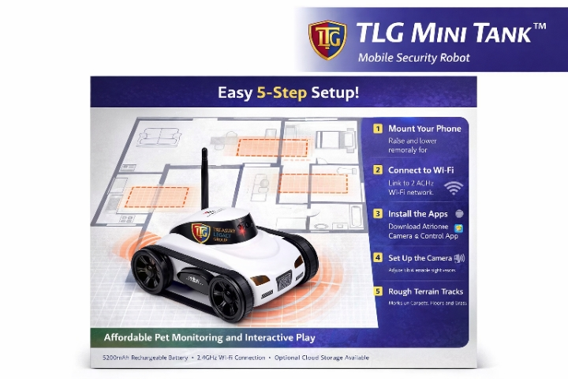
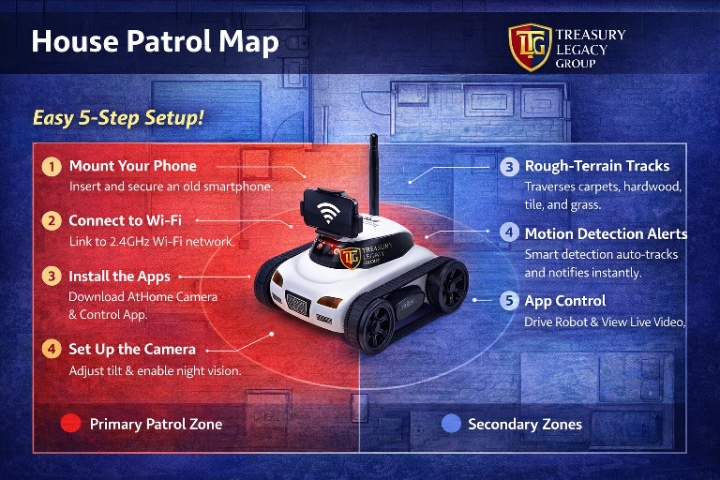
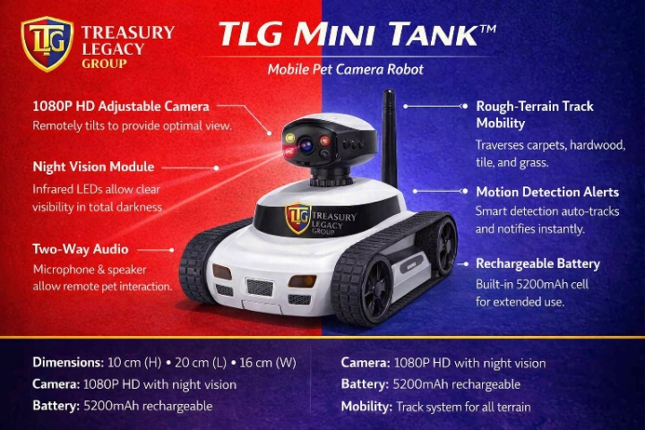
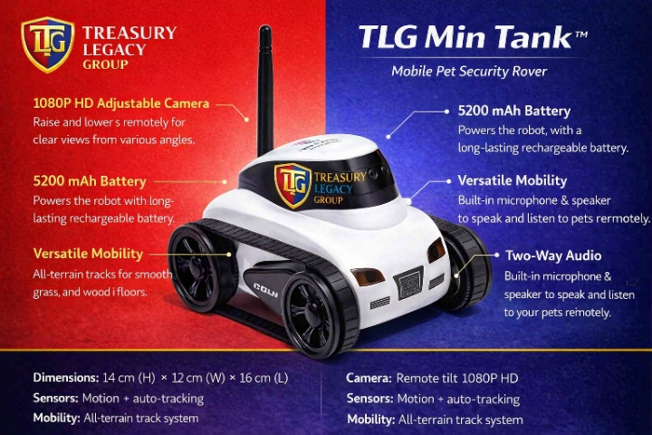
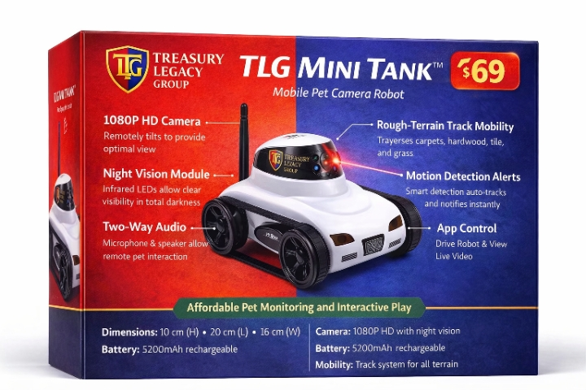
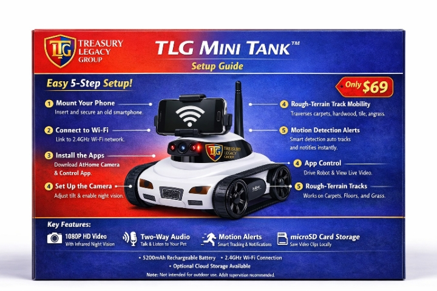

TLG Mini Tank™
.jpeg)
Item Details & Specifications
1. Remote Control via Smartphone for Convenient Operation
The TLG Mini Tank™ with phone app allows you to remotely control the camera with your smartphone. Simply download the dedicated app from the App Store or Google Play, and you'll enjoy seamless, flexible control from anywhere. Say goodbye to traditional remotes and enjoy a more intuitive and accessible way to operate your device, offering greater freedom and convenience.
2. Real-Time Video Transmission for Immersive Experiences
Equipped with a high-quality camera, the TLG Mini Tank™ transmits live video directly to your phone screen. Whether you’re exploring new corners of your home or capturing your pet’s delightful moments, the real-time video feed ensures you don’t miss a thing. Perfect for both pet monitoring and recording unforgettable events, offering a truly immersive experience.

3. Sleek and Stylish Tank-Style Design with Modern Appeal
The TLG Mini Tank™ boasts a tank-style design that blends modern aesthetics with functional design. Its black-and-white color scheme exudes a sophisticated, timeless look, while the unique tracks and streamlined body add an extra layer of mechanical beauty. Whether it's on display in your home or being used for playtime, this device is sure to attract attention.
4. Versatile Mobility with Powerful Track Design for All-Terrain Use
Thanks to its powerful motor and track system, the TLG Mini Tank™ moves effortlessly across a variety of surfaces, including carpets, grass, and wooden floors. It can turn smoothly and move forwards and backwards, providing ultimate flexibility in movement. Whether it’s exploring your home or navigating different terrains, it ensures stable and enjoyable usage.
5. Ideal for Pet Monitoring, Exploration, and Play
Whether you're at home or away, the TLG Mini Tank™ is perfect for monitoring your pet, exploring your space, or simply having fun. Its dynamic features make it suitable for a wide range of environments, from home surveillance to interactive play. The sleek design and versatility ensure it fits seamlessly into various scenarios, providing both utility and entertainment.

Summary of Core Features
- The TLG Mini Tank™ with phone app offers seamless smartphone control for easy operation and enhanced flexibility.
- Enjoy live, real-time video transmission, allowing you to monitor your pet or explore your space from anywhere.
- The device features a sleek, tank-style design with a modern black-and-white finish, adding a touch of style and sophistication.
- Equipped with a powerful track system, it can navigate carpets, grass, and wooden floors, providing versatile mobility.
- Ideal for pet monitoring, exploration, and interactive play, perfectly suited for a variety of environments and activities.
Key Specifications & Features
This device is the TLG Mini Tank™, a battery-powered, tank-style security robot designed for indoor monitoring and interactive play with pets. It features a motorized track system and a camera that can be remotely adjusted via a smartphone app.
- Mobility: Equipped with a powerful track system, it can navigate various surfaces including carpets, wooden floors, and grass.
- Camera System:
- Resolution: Provides 1080P HD video quality.
- Night Vision: Features infrared LEDs for clear monitoring in low-light or total darkness.
- Adjustability: The camera can be raised and lowered remotely to capture different angles.
- Interactive Functions:
- Two-Way Audio: Built-in microphone and speaker allow you to hear and speak to your pet remotely.
- Smart Alerts: Supports motion detection and auto-tracking, sending instant notifications to your phone when activity is detected.
- Battery & Storage:
- Battery: Includes a built-in 5200mAh rechargeable battery for extended use on a single charge.
- Storage: Supports local storage via a micro SD card (up to 128GB) and optional cloud storage.
- Connectivity: Works with 2.4GHz WiFi networks (does not support 5GHz) and is controlled via a mobile app.
Physical Design
The device has a modern black-and-white "tank-style" finish. Its compact size and track-wheel design make it stable and less likely to tip over while navigating around furniture.
.jpg)
420 ROBOTICS — AI USE POLICY, WARRANTY, SAFETY NOTICE, AND CUSTOMER AGREEMENT
420 Robotics uses multiple AI systems to power, support, and improve the TLG Mini Tank™ and other robotics products. These systems include Claude, Microsoft Copilot, GPT‑5, Gemini, Grok, and Meta AI. All AIs used are on free plans unless a paid plan is recommended for advanced features. Customers are not required to purchase any AI subscription to use the robot. Paid plans may improve performance, but they are optional.
420 Robotics uses multiple AIs because no single model is perfect. Each model has strengths and weaknesses. By combining them, we reduce bias, increase accuracy, and create a safer learning environment for new users. This is the first time large language models are being used in consumer robotics for the average person, and our goal is to make the experience simple, safe, and educational.
The TLG Mini Tank™ is designed as an entry‑level AI robotics device. It teaches users how AI works, how robotics respond to commands, and how to safely interact with mobile AI systems. It is intentionally limited in power to prevent harm. The only real risk is privacy, which is the same risk you already have with your phone, laptop, smart TV, Ring doorbell, or any device with a camera or microphone. The robot uses an old phone or extra device, not your main phone, and connects to your home Wi‑Fi. No AI model runs directly on your personal phone unless you choose to install it.
.jpg)
420 Robotics does not collect personal data from your robot. All video, audio, and sensor data stays on your device or inside the apps you choose to install. You are responsible for your own privacy settings. If you already carry a phone with 3–6 cameras, you already have more exposure than this robot creates.
The robot includes a built‑in red laser pointer. This laser is low‑power and safe for pets and children when used responsibly. It can be used for pet entertainment, cat chase games, dog training, or directing a dog toward a door or window during a potential threat. The robot cannot physically harm anyone. It cannot attack, restrain, or chase a person. It is a signaling and monitoring tool only.
420 Robotics provides a limited warranty. If the robot malfunctions due to manufacturing defects, software issues, or AI errors, we will repair or replace it. If the robot is damaged due to misuse, neglect, water damage, being stepped on, being thrown, or being run over by a car, the customer is responsible for replacement parts. If we have spare parts available, we will send them at no cost. If we do not have spare parts, the customer must purchase replacements. We do not support intentional destruction for entertainment or online videos.
420 Robotics encourages learning and participation. Customers who show interest in robotics, AI, or troubleshooting may be invited to assist with testing, feedback, or community support. This is optional. Customers who do not want AI involvement can use the robot offline or with non‑AI modes. The robot can operate without AI using manual control and basic camera functions.

420 Robotics is not responsible for injuries caused by pets reacting to the laser pointer. Customers must use the laser responsibly. The robot is not a replacement for home security systems, emergency services, or professional monitoring. It is a learning tool, a pet interaction device, and a basic mobile camera platform.
By using the TLG Mini Tank™, customers agree to operate the robot safely, maintain their own privacy settings, and understand the limitations of AI systems. 420 Robotics and Treasury Legacy Group are not liable for misuse, unsafe operation, or damage caused by ignoring instructions. All AI systems used are third‑party services with their own terms and policies. Customers are responsible for reviewing those policies.
420 Robotics provides support for setup, troubleshooting, and repairs. If a robot breaks due to normal use, we will help fix it. If it is destroyed beyond repair, we will assist with replacement options. Our mission is to help people learn robotics safely, understand AI without fear, and bring the next generation into the computer‑robotics age with confidence.
TLG MINI TANK™ — LONG TECHNICAL VERSION AND DETAILED SPECIFICATIONS
PRODUCT OVERVIEW
The TLG Mini Tank™ is a compact, track-driven mobile pet camera and indoor monitoring robot branded by Treasury Legacy Group and integrated into the 420 Robotics ecosystem. It is designed for remote pet monitoring, home exploration, and basic indoor security using a smartphone app. The platform combines a 1080P HD adjustable camera, infrared night vision, two-way audio, motion detection, auto-tracking, and all-terrain track mobility in a single battery-powered chassis. It is intended as a practical tool and an entry-level robotics/AI learning device for the average person.

PRICING AND AVAILABILITY
The TLG Mini Tank™ is typically offered around $69 USD. Final price may vary based on season, supply chain conditions, shipping constraints, and external factors such as tariffs, logistics disruptions, or carrier surcharges. 420 Robotics and Treasury Legacy Group reserve the right to adjust pricing and availability without prior notice. In the event of global shipping delays, blocked shipping lanes, or sudden cost increases, customers may experience temporary price changes or stock limitations. These conditions are outside our direct control, but we will clearly indicate when such factors affect delivery times or pricing.
CORE FUNCTIONALITY
The TLG Mini Tank™ is controlled entirely via a smartphone app (iOS and Android). After connecting the robot to a 2.4GHz WiFi network, users can:
- Drive the robot forward, backward, and turn in place using on-screen controls.
- View real-time 1080P HD video from the onboard camera.
- Adjust the camera tilt remotely to change viewing angle.
- Enable infrared night vision for low-light or dark environments.
- Use two-way audio to speak to and listen to pets or people near the robot.
- Enable motion detection and auto-tracking to follow movement and send alerts.
- Record video locally to a micro SD card or to optional cloud storage (where supported).

PHYSICAL DESIGN AND MECHANICAL SYSTEM
The TLG Mini Tank™ uses a tank-style tracked chassis for stability and traction:
- Form factor: low-profile, compact body with integrated track system.
- Color scheme: black-and-white modern finish with TLG branding.
- Track system: dual rubberized tracks driven by internal motors, designed for Carpets (short to medium pile), Hardwood floors, Tile and laminate, Short indoor/outdoor grass (flat surfaces).
- Stability: wide track base reduces tipping when turning or crossing small thresholds.
- Ground clearance: sufficient for typical indoor obstacles such as rug edges and door transitions, not intended for stairs or large obstacles.
- Antenna: external or integrated WiFi antenna for stable 2.4GHz connectivity.
CAMERA SYSTEM
- Resolution: 1080P HD (1920 × 1080) video.
- Frame rate: optimized for smooth streaming over WiFi (actual FPS may vary by network).
- Lens: fixed-focus wide-angle lens suitable for room coverage and pet monitoring.
- Tilt mechanism: motorized vertical adjustment controlled via app, allowing the user to raise or lower the camera angle without physically touching the robot.
- Night vision: Infrared LEDs arranged around the lens. Automatic or manual IR activation depending on app settings. Provides visibility in low-light or total darkness in grayscale IR mode.
- Image processing: basic in-app controls for brightness, contrast, and other viewing parameters (depending on app version).

AUDIO SYSTEM
- Microphone: Built-in mic captures ambient sound near the robot. Used for listening to pets, children, or environmental noise.
- Speaker: Built-in speaker allows the user to speak through the robot using the app. Suitable for calling pets, issuing verbal commands, or communicating with people in the room.
- Latency: audio delay depends on network quality; not intended for real-time teleconferencing but adequate for basic interaction and commands.
BATTERY AND POWER
- Capacity: 5200mAh (nominal).
- Type: rechargeable lithium-based cell (exact chemistry may vary by batch).
- Runtime: extended use on a single charge.
- Charging: Charged via included USB cable (adapter not always included; depends on package). LED indicators show charging and full-charge status.
- Safety: Battery is not user-serviceable. Do not puncture, crush, or expose to water or extreme heat.
STORAGE AND DATA
- Local Storage: micro SD card slot (up to 128GB, depending on firmware). Used for recording video clips, snapshots, and event-based footage. Card not always included; check package contents.
- Cloud Storage: Optional cloud services may be available through the app provider. Cloud storage is managed by the app vendor, not directly by 420 Robotics.
- Data Ownership: All video and audio data are stored on the user’s device, SD card, or chosen cloud provider. 420 Robotics does not collect or store user footage. Users are responsible for their own privacy settings and data management.
CONNECTIVITY AND APP CONTROL
- Network: 2.4GHz WiFi only (does not support 5GHz). Requires a stable home network for best performance.
- App: Available on iOS and Android.
- Remote Access: Users can access the robot from outside the home network if remote access is enabled and configured. Performance depends on internet speed and router configuration.